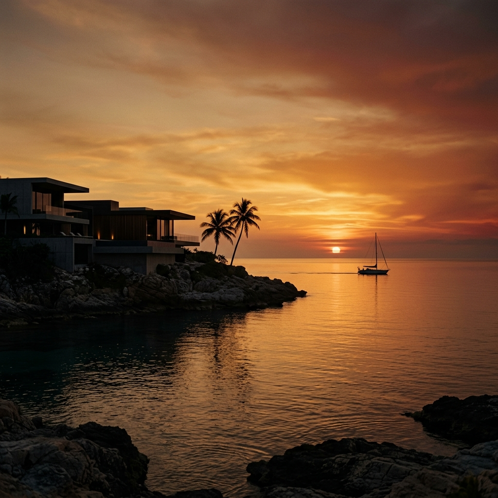
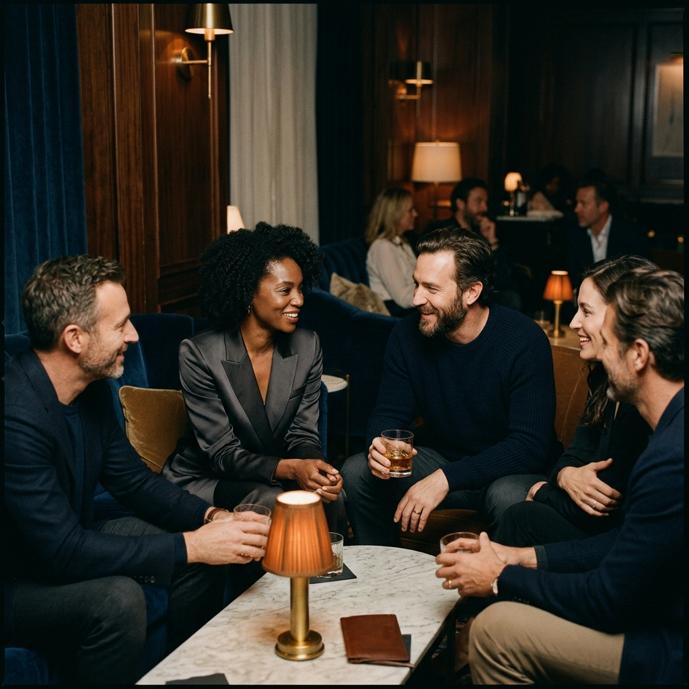
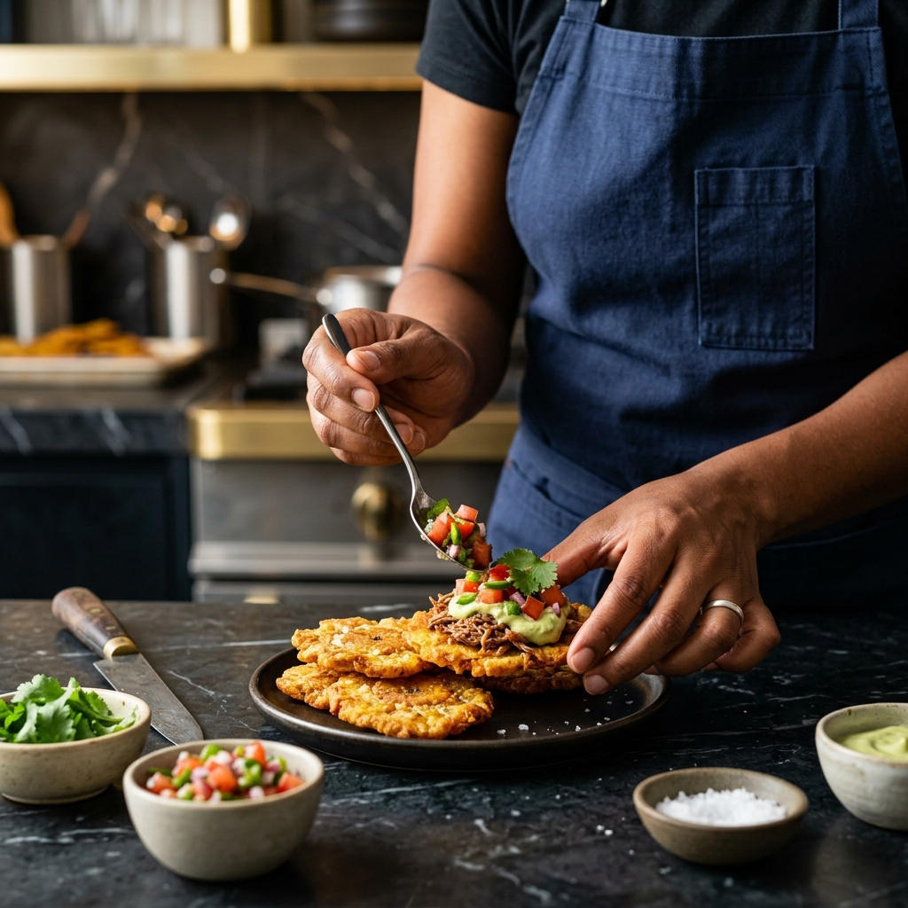
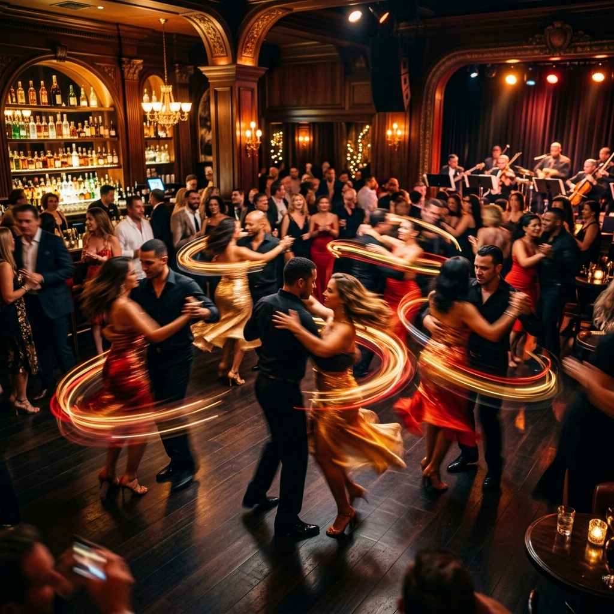

Un puente cultural y terapéutico donde el ritmo, la gastronomía y la conexión humana combaten el aislamiento social en la Gran Región.

"El ritmo es la medicina del alma."
En las grises tardes de invierno de Luxemburgo, Danzart emerge como un santuario. Entendemos el estrés corporativo y el aislamiento que a menudo acompaña a la vida en el corazón de Europa.
Ofrecemos clases de Salsa Cubana y Bachata Dominicana con un profundo enfoque cultural. Más que baile, mostramos la cultura afrolatina como un subproducto vibrante de la música africana contemporánea y tradicional, guiados por músicos y entendidos de alto calibre: artistas cubanos, dominicanos y jazzistas internacionales.
Programas diseñados para cada etapa de la vida, centrados en el crecimiento personal y la cohesión comunitaria.
Ritmo & Raíces (3-8 años)
Un viaje lúdico a través de la creación de instrumentos artesanales, exploración de colores caribeños y el descubrimiento del movimiento corporal.
Identidad & Creación
Exploración de la Rueda de Casino, historia urbana y expresión a través del arte digital y la narrativa visual contemporánea.
Conexión & Desconexión
Talleres de fin de semana y clases after-work con una estructura única: 20 minutos de inmersión cultural y entendimiento teórico, más 40 minutos de clase práctica integrando baile, idiomas y gastronomía.
Donde la tradición se encuentra con la innovación en el corazón de Europa.

Clases magistrales de cocina tradicional enfocadas en el origen y la historia de cada ingrediente, desarrolladas en alianza con Cosmopolita.
Aprende el idioma a través de la música, el cine y las artes plásticas, sin libros de texto.
Zumba al aire libre y caminatas urbanas que culminan en majestuosas Ruedas de Casino, transformando la terapia en una auténtica actividad turística.
Proyectos audiovisuales y de diseño utilizando las herramientas de grabado láser y corte de Atelier Prestige al servicio de la cultura.
Reserva tu espacio. Las plazas para las clases de 20m + 40m son limitadas para garantizar la mejor experiencia.
| Día | Horario | Actividad | Lugar |
|---|---|---|---|
| Martes & Jueves | 19:00 - 20:00 | Salsa Cubana (After-work) | Studio Kirchberg |
| Viernes | 18:30 - 19:30 | Bachata & Inmersión | Studio Cloche d'Or |
| Sábados | 10:00 - 13:00 | Cocina (Sabores con Alma) | Atelier Prestige HQ |
| Domingos | 16:00 - 18:00 | Zumba Outdoor & Rueda | Parque Kinnekswiss |

"En nuestro hub, el 'Solar' o el 'Colmado' no son solo espacios físicos, son latidos que transforman el frío concreto en calidez humana, el silencio en coro, y el aislamiento en comunidad."